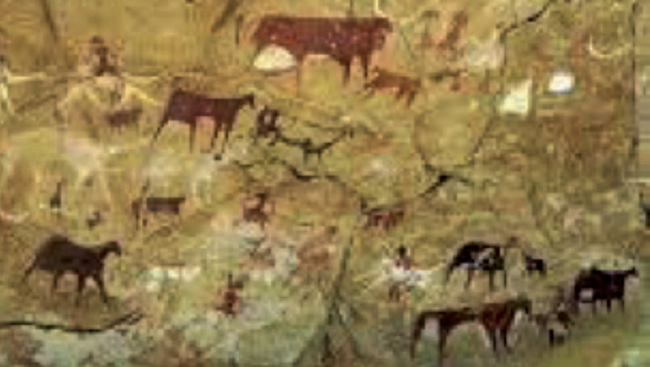

Kielelezo namba 1: Michoro ya mapangoni, Kondoa Irangi
Eneo la Oldupai, Arusha ni mahali ambako kuligunduliwa masalia ya fuvu la binadamu wa kale. Mabaki haya yaligunduliwa na Dkt. Louis Leakey na Mary Leakey mwaka 1959. Huu ni urithi mkubwa kwa sababu inaaminika kuwa ndipo alipoishi binadamu wa kwanza duniani (chunguza Kielelezo namba 2).

Kielelezo namba 2: Fuvu la binadamu aliyeishi kwa miaka mingi zaidi
Pia, eneo la Laetoli, Arusha lina nyayo za binadamu anayeaminika kuishi kwa miaka mingi zaidi duniani (chunguza